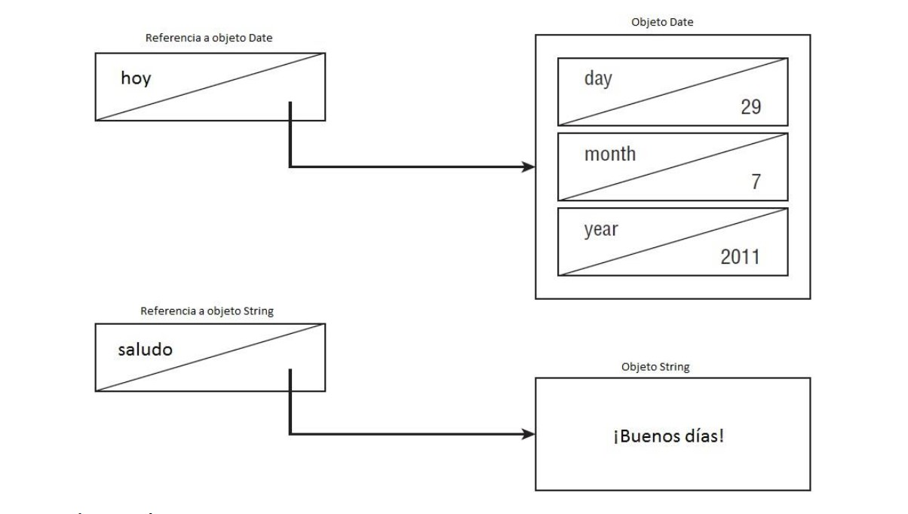
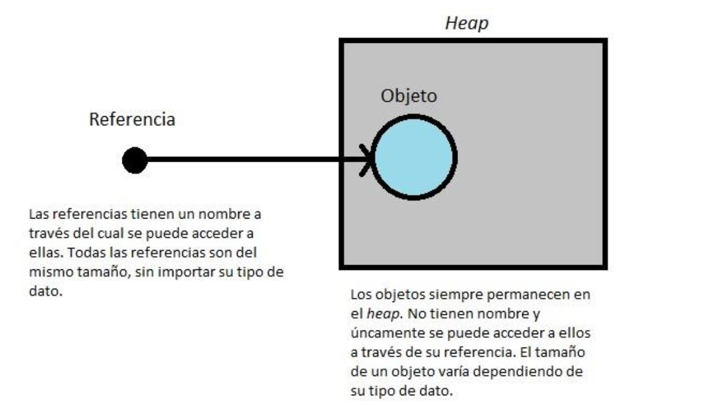
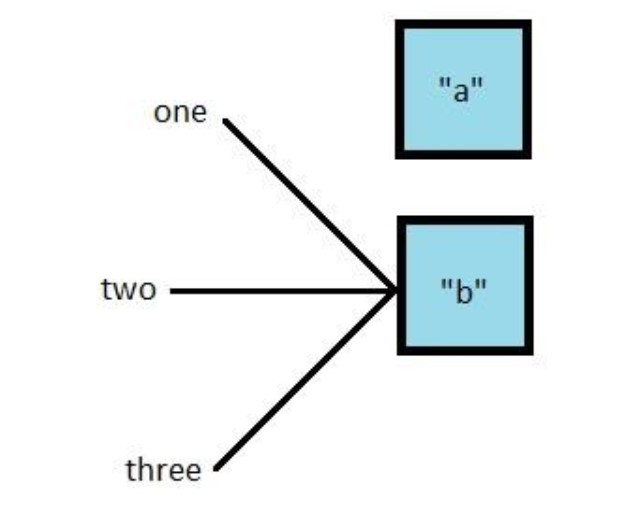

Bloques básicos en Java
3. Bloques básicos en Java
3.1. Comprender la estructura de clases de Java
Las clases son los componentes básicos en un programa Java. Cuando se define una clase , se describen todas las partes y características que la componen. Para utilizar la mayoría de las clases, se tienen que crear objetos. Un objeto es una instancia de la clase en tiempo de ejecución. Los objetos de las distintas clases representan el estado del programa. En las siguientes secciones se verán los componentes de una clase Java, así como la relación entre clases y archivos.
3.1.1. Propiedades y métodos
Las clases Java tienen dos elementos principales, métodos , a menudo llamados funciones o procedimientos, y propiedades , también conocidas como atributos. Las propiedades mantienen el estado del programa, y los métodos operan en ese estado. Si el cambio es relevante en el estado del programa, se almacenará en una propiedad. Es el programador quien crea y organiza estos elementos de tal manera que el código sea útil y fácil de entender para otros programadores. La clase Java más simple que puede escribirse es como la que sigue: (Los números de línea solo están ahí para hacer la lectura del código más fácil, no intervienen en el programa).
1: public class Fruit {
2: }
permite a la clase Fruit ser utilizada por otras clases. La palabra reservada class indica que se está definiendo una clase. Fruit es el nombre de la clase. A continuación, se añadirá a la clase Fruit su primera propiedad:
1: public class Fruit {
2: String name;
3: }
1: public class Fruit {
2: String name;
3: public String getName() {
4: return name;
5: }
6: public void setName(String newName) {
7: name = newName;
8: } 9: }
3.1.2. Comentarios
Los comentarios son muy habituales en el código de un programa Java. Son líneas de texto que no son ejecutadas, y que pueden ser colocadas en cualquier lugar. Los comentarios tienen como finalidad hacer la lectura del código más sencilla. Hay tres tipos de comentarios en Java.
1 - El comentario de una sola línea, comienza con dos barras diagonales.
// comment until end of line
2 - El comentario de varias líneas o comentario de líneas múltiples, comienza con el símbolo "/ *" hasta el símbolo * /. Se suele escribir * al comienzo de cada línea de un comentario de líneas múltiples para que sea más fácil de leer.
/* Multiple
(^) * line comment
(^) */
3 - El comentario de Javadoc, muy similar a un comentario de líneas múltiples. Los comentarios de Javadoc tienen una estructura específica que la herramienta Javadoc sabe cómo interpretar para poder crear la documentación del código. La diferencia con los comentarios de líneas múltiples es que el comienzo debe ser "/**"
/**
Javadoc multiple-line comment
*/
3.1.3. Javadoc
Javadoc es una utilidad de Oracle que sirve para generar documentación de APIs en formato HTML a partir del código. Al documentar una clase, se debe incluir lo siguiente:
- Descripción general de la clase, número de versión, nombre de autores.
- Documentación de métodos: incluye descripción general, nombre y tipos de parámetros, descripción de parámetros, tipo de retorno, descripción del valor que devuelve.
Para que javadoc pueda generar la documentación automáticamente, la información debe incluirse entre símbolos de comentario de forma que empiece con una barra simple y doble asterisco (/*), y termine con un asterisco y barra simple (/). Dependiendo de la ubicación, el comentario puede representar una cosa distinta, si está incluido delante de una clase, es un comentario de clase pero, si está incluido delante de un método, es un comentario de ese método. Para crear la documentación de javadoc, se hace uso de palabras reservadas o "tags" que van precedidas por el carácter "@". En la siguiente tabla se puede encontrar las palabras reservadas que suelen utilizarse más a menudo.
| TAG | DESCRIPCIÓN | COMPRENDE |
|---|---|---|
| @author | Nombre del desarrollador. | Nombre autor o autores |
| @deprecated | Indica que el método o clase es obsoleto (propio de versiones anteriores) y que no se recomienda su uso. | Descripción |
| @param | Definición de un parámetro de un método, es requerido para todos los parámetros del método. | Nombre de parámetro y descripción |
| @return | Informa de lo que devuelve el método, no se aplica en constructores o métodos "void". | Descripción del valor de retorno |
| @see | Asocia con otro método o clase. | Referencia cruzada referencia (#método(); clase#método(); paquete.clase; paquete.clase#método()). |
| @version | Versión del método o clase. | Versión |
A continuación, se verá un ejemplo de documentación javadoc para una clase y un método.
**/****
*** Clase que implementa un ejemplo de una suma a partir de dos números dados * y**
**devuelve el resultado por pantalla.**
*****
*** @author Sergio**
*** @version 2.**
*** @since 20 18**
***/**
class EjemploSuma {
public static void main(String args[]){
int num1 = 10;
int num2 = 5;
int result = getSuma(num1,num2);
System.out.println("La suma es igual a "+result);
}
**/****
*** Devuelve la suma de dos números enteros (int)**
*****
*** @param a primer sumando**
*** @param b segundo sumando**
*** @return resultado de la suma**
***/**
public static int getSuma(int a, int b) {
return a+b;
}
}
3.1.4. Clases vs. Archivos
Normalmente, cada clase de Java se define en su propio archivo * .java. Por lo general las clases son public , lo que significa que cualquier código puede utilizarlas. Las clases; no obstante, no tienen por qué ser públicas. Por ejemplo, definir una clase como sigue (sin la palabra reservada public ), también es posible.
1: class Fruit {
2: String name;
3: }
También es posible que dos clases Java estén en el mismo archivo. En este caso, como mucho una de las clases del archivo puede ser pública. Por ejemplo:
1: public class Fruit {
2: private String name;
3: }
4: class FruitSqueezer {
5: }
3.2. El método main()
Un programa Java comienza su ejecución en su método main(). El método main() es lo primero que se ejecuta cuando se inicia el programa, y es llamado automáticamente por la Máquina Virtual Java (JVM). La JVM es la encargada de comunicarse con el sistema subyacente para asignar recursos como la memoria, la CPU, el acceso a archivos, etc.
El método main() nos sirve como enlace para conectar las distintas partes del código a partir del inicio de la ejecución del programa. Un ejemplo del tipo de clase más simple que puede contener el método main() sería como la siguiente:
1: public class Fruit {
2: public static void main(String[] args) { 3:
4: }
5:}
$ javac Fruit.java
$ java Fruit
En caso de no obtener ningún mensaje de error, el programa se ejecutó con éxito. En caso de obtener un mensaje de error, se debería verificar que el Java Development Kit (JDK) está correctamente instalado y que no existe ningún error sintáctico en la escritura del código. Para compilar código Java, el archivo debe tener la extensión .java. El nombre del archivo debe coincidir con el nombre de la clase definida en el archivo. El resultado es otro archivo de bytecode con el mismo nombre, pero con una extensión .class. El bytecode no es código legible por las personas, pero sí por la JVM. Las reglas sobre cómo debe ser el contenido de un archivo de código Java son más extensas de lo que se ha visto hasta ahora; no obstante, por el momento y con la finalidad de hacerlo más simple, solo se tendrán en cuenta las siguientes:
1 - Cada archivo puede contener solo una clase (ya se ha visto que no tiene por qué ser así, pero de esta forma el código será más sencillo).
2 - El nombre del archivo debe coincidir con el nombre de la clase que contiene, y la extensión de este siempre será .java.
Se supone que se reemplaza la línea 3 en Fruit.java con System.out.println ("Hola"). Cuando se compila y se ejecuta nuevamente el código, el programa imprimirá en la consola la palabra “Hola”. A continuación se va a revisar en profundidad el método main() , ya que aparecen en él una serie de palabras clave del lenguaje Java, algunas ya vistas anteriormente.
La palabra reservada public es lo que se llama un modificador de acceso. Declara el nivel de exposición de este método a la hora de ser llamado en otras partes del programa. En este caso, public hace referencia a que el método puede ser llamado en cualquier parte del programa.
La palabra reservada static enlaza un método a su clase para que pueda ser llamado solo por el nombre de la clase, como, por ejemplo, Fruit.main(). No es necesario crear un objeto para llamar al método main(). Si el método main() no está presente en la clase .java que se ejecuta en la consola, el proceso generará un error y terminará. Incluso si el método main() está presente y no es estático (palabra reservada static ), Java lanzará una excepción.
La palabra reservada void representa el tipo de dato que devuelve el método. Un método que no devuelve datos (es decir, que es void ) devuelve el control de la ejecución del programa al punto donde quedó antes de ser ejecutado de manera “silenciosa”. En general, es una buena práctica usar void para métodos que cambian el estado de un objeto. En ese caso, el método main() cambia el estado del programa de iniciado a finalizado.
Finalmente se llega a la lista de parámetros del método main() , representada como un array de objetos de tipo java.lang.String. El compilador acepta cualquiera de las siguientes formas a la hora de declarar lo parámetros: String[] args , String args[] o String...args. La variable args contiene los argumentos que se leyeron de la consola cuando se inició la JVM. Los caracteres [] son corchetes, utilizados para representar que args es un array. Un array es una lista de tamaño fijo que contiene elementos de un mismo tipo de dato. Los caracteres ... se denominan varargs (lista de argumentos variable). En el siguiente ejemplo se ve cómo usar el parámetro args. Primero se modifica el programa anterior para imprimir los primeros dos argumentos que sean pasados al programa:
public class Fruit {
public static void main(String[] args) {
System.out.println(args[0]);
System.out.println(args[1]);
}
}
$ javac Fruit.java
$ java Fruit Banana Apple
Banana
Apple
$ javac Fruit.java
$ java Fruit "Big Banana" Apple
Big Banana
Apple
$ javac Fruit.java
$ java Fruit Fruit 1
Fruit
1
$ javac Fruit.java
$ java Fruit Fruit
FruitException in thread "main"
java.lang.ArrayIndexOutOfBoundsException: 1
at mainmethod. **Fruit** .main (Fruit.java:7)
Java que se ejecutan en la JVM (Java Virtual Machine) se ejecutan en cualquier máquina con Java independientemente de la máquina original donde fueron compilados o el sistema operativo de esta.
3.3. Paquetes e importaciones
Java tiene miles de clases por defecto y muchas otras creadas por otros desarrolladores, por lo que es necesario una forma de organizarlas. En Java existen paquetes ( packages ), los cuales sirven para organizar las clases de manera lógica. Es necesario especificar en qué paquete se encuentra cada clase para que Java pueda utilizar la clase correcta. Se supone que el siguiente código está por compilar:
public class ImportExample {
public static void main(String[] args) {
Random r = new Random(); // ¡No compila!
System.out.println(r.nextInt(10));
}
}
Random cannot be resolved to a type
import java.util.Random; // Indica a la clase dónde encontrar la clase Random
//(Paquete java.util) public
class ImportExample {
public static void main(String[] args) {
Random r = new Random();
System.out.println(r.nextInt(10)); //Imprime por pantalla un número
// del 0 al 9
}
}
A modo de analogía, si se imagina una carta cuyo destinatario es la dirección C/San Andrés nº20 1ºC. El cartero irá en primer lugar al edificio número 20 de la calle San Andrés, y luego buscará el piso 1ºC. La dirección (calle y número de edificio) serían los paquetes Java, y 1ºC sería el nombre de la clase Java, la cual se ha podido encontrar porque se sabía dentro de qué paquetes estaba. Hay muchos pisos 1ºC, pero solo hay un 1ºC en el edificio nº20 de la calle San Andrés.
Los nombres de los paquetes son jerárquicos, al igual que ocurre con el correo. El servicio de correo mirará en primer lugar el país, luego la región, la ciudad, la calle, el edificio y por último el piso para poder entregar una carta. Con los paquetes Java ocurre algo muy similar. Si el paquete comienza por java o javax significa que es un paquete por defecto del JDK; si empieza por cualquier otra cosa, hará referencia al dominio del propietario del paquete. Por ejemplo, el paquete com.amazon.laClaseQueSea indica que el código viene de amazon.com. Tras el nombre del dominio los nombres del resto de la jerarquía de paquetes y clases pueden ser los que el programador guste, aunque es una buena práctica que estos sean lo más descriptivos posible. En los ejemplos que se muestran a continuación es posible encontrar paquetes que no provengan de ningún dominio concreto, como, por ejemplo a.b.c (la clase c está dentro del paquete a.b), esto no es un problema, ya que se trata únicamente de ejemplos.
3.3.1. Wildcards
Las clases que se encuentran en el mismo paquete se pueden importar todas juntas, y para ello, se utiliza el siguiente carácter comodín o wildcard. Actualmente se considera una mala práctica, ya que se importan clases innecesarias que pueden no necesitarse.
import java.util.*; //El asterisco indica que se importarán todas las clases dentro
//del paquete java.util
import java.util.*;
public class ImportExample {
public static void main(String[] args) {
Random r = new Random();
System.out.println(r.nextInt(10));
}
}
3.3.2. Imports redundantes
Como se ha podido ver en el código de ejemplos anteriores, se han utilizado clases, como la clase System o la clase String en los programas sin importar nada, ¿Cómo es que el código funcionaba si no se han importado estas clases? Esto se debe a que existe un paquete en Java llamado java.lang que siempre se importa de manera automática. Aun así, Java permite también importarlo manualmente. Esto, no obstante, no se debe hacer, ya que importar algo que se importa por defecto o que ya está importado crea código redundante. Ejemplo:
1: import java.lang.System;
2: import java.lang.*;
3: import java.util.Random;
4: import java.util.*;
5: public class ImportExample {
6: public static void main(String[] args) {
7: Random r = new Random();
8: System.out.println(r.nextInt(10));
9: }
10:}
Otro ejemplo:
public class InputImports {
public void read(Files files) {
Paths.get("name");
}
}
Hay dos posibles formas de hacerlo:
import java.nio.file.*; //Importa ambos paquetes debido al uso de la _wildcard_ *
import.jav a.nio.file.Files; //Importa la clase File
import.java.nio.file.Paths; //Importa la clase Paths
A continuación, se muestran unos ejemplos que NO funcionarían:
import java.nio.*; // NO FUNCIONA. Recordar que la wildcard *
//solo importa clases, no otros paquetes import
java.nio.*.*; // NO FUNCIONA. Solo puede haber una wildcard
//por import y esta debe estar al final import
java.nio.file.Paths.*; // NO FUNCIONA. No se pueden importar
//métodos sin la palabra clave static
3.3.3. Conflictos de nombrado
Una de las razones para utilizar paquetes en Java es que el nombre de las clases no tiene por qué ser
único. Esto quiere decir que algunas veces se querrá importar una clase que tenga el mismo nombre que
otras que se encuentran en otras partes del programa. Un ejemplo de esto es la clase Date. Java posee
implementadas las clases java.util.Date y java.sql.Date. Son dos clases diferentes con el mismo nombre;
no obstante, cada una se encuentra en un paquete diferente.
Ejemplo:
import java.util.*;
import java.sql.*; // No compila
public class Conflicts {
Date date;
//Más código
}
El código no compila ya que la clase Date existe en ambos paquetes, por lo que Java dará el siguiente error de compilación: “The type Date is ambiguous”. Tampoco compilará esto:
import java.util.Date; import
java.sql.Date;
import java.util.Date; import
java.sql.*;
import java.util.Date;
public class Conflicts {
Date date; //Usa la clase java.util.Date java.sql.Date sqlDate;
//Usa la clase java.sql.Date }
3.3.4. Crear un nuevo paquete
Hasta ahora, parte del código que se ha escrito en el capítulo se ha encontrado en el paquete por defecto default package. Este es un paquete especial que carece de nombre y que es mejor no utilizar. En la vida real, será necesario nombrar los paquetes donde se encuentran las clases para evitar conflictos de nombrado y para permitir la reutilización de código. Ahora, se quiere crear un nuevo paquete. La estructura de directorios en un ordenador normal está relacionado con la estructura de paquetes en Java. Se debe tener en cuenta, por ejemplo, la existencia de las siguientes clases:
C:\temp\packagea\ClassA.java package
packagea;
public class ClassA
{
}
C: \ temp \ packageb \ ClassB.java
package packageb;
import packagea.ClassA;
public class ClassB {
public static void main(String[] args) {
ClassA a;
System.out.println("Got it");
}
}
3.3.5. Compilar código con packages :
Es posible, y de hecho mucho más cómodo, utilizar un IDE ( Integrated Development Environment ) para programar código Java, como Eclipse o Netbeans; no obstante, es posible ejecutar un programa Java desde la línea de comandos y es importante saber cómo hacerlo. Se comienza por crear ambas clases y situarse en el directorio C:\temp:
Windows
- Crear los archivos:
C: \ temp \ packagea \ ClassA.java C: \ temp \ packageb \ ClassB.java - Ir a C: \ temp
cd C: \ temp
Mac OS/Linux
- Crear los archivos:
/tmp/packagea/ClassA.java /tmp/packageb/ClassB.java - Escribir el comando
A continuación es necesario compilar ambos archivos, por lo que hay que escribir lo siguiente en la línea de comandos:
cd /tmpEn caso de que el comando no funcione, se mostrará por pantalla un mensaje de error. En estos casos es recomendable revisar los archivos con cuidado para detectar algún posible error de sintaxis. En caso de que el comando funcione correctamente, se crearán dos nuevos archivos: packagea/ClassA.class y packageb/ClassB.class. Por último, quedaría ejecutar el programa. Para ello habría que poner lo siguiente en la línea de comandos:javac packagea/ClassA.java packageb/ClassB.javaSi todo funciona correctamente, la frase “ Got it ” se mostrará en la consola. Es importante percatarse de que a la hora de ejecutar un programa se escribe únicamente ClassB , no ClassB.class. En Java no se escribe la extensión cuando se ejecuta un programa.java packageb.ClassB
3.3.6. Ruta de las clases y JARs
También es posible especificar la ubicación de otros archivos, explícitamente, utilizando rutas. Esta técnica es muy útil cuando los archivos de las clases están situados en otra parte que no sea el directorio actual o en archivos JAR. Un archivo JAR es como un archivo ZIP que únicamente contiene clases Java. A continuación se verán unos ejemplos:
En Windows
java - cp ".;C: \ temp \ someOtherLocation;c: \ temp \ myJar.jar" myPackage.MyClass
java - cp ".:/tmp/someOtherLocation:/tmp/myJar.jar" myPackage.MyClass
java -cp "C:\temp\directoryWithJars\*" myPackage.MyClass
3.4. Crear objetos
Los objetos son una parte fundamental de un programa Java. Un objeto es una instancia de una clase. En las siguientes secciones, se profundizará acerca de los constructores, las propiedades y cómo éstas han de ser inicializadas correctamente.
3.4.1. Constructores
Para crear una instancia de una clase, siempre se utilizará la palabra reservada new. Por ejemplo:
Random r = new Random();
public class Chick {
public Chick() {
System.out.println("in constructor");
}
}
public class Chicken {
int numEggs = 0;// Inicializada directamente
String name;
public Chicken() {
name = "Duke";// Inicializada en elconstructor
}
}
3.4.2. Leer y modificar las propiedades de los objetos
Es posible leer y modificar las propiedades de un objeto a partir de sí mismo, por ejemplo:
public class Swan {
int numberEggs;// variable de instancia o propiedad de la clase Swan
public static void main(String[] args) {
Swan mother = new Swan();
mother.numberEggs = 1; // modifica la propiedad
System.out.println(mother.numberEggs); // lee la propiedad
}
}
1: public class Name {
2: String first = "Theodore";
3: String last = "Moose";
4: String full = first + last;
5: }
3.4.3. Bloques inicializadores de instancias
A lo largo de los capítulos anteriores se han visto diferentes métodos, todos ellos conteniendo los caracteres {}. El código entre llaves “{}” es llamado bloque de código. La mayoría de las veces hay bloques de código dentro de métodos, que se ejecutan cuando el método es llamado. Otras veces, los bloques de código pueden aparecer fuera de un método. Estos bloques son llamados inicializadores de instancia. ¿Cuántos bloques hay en el siguiente código? ¿Cuántos de estos bloques son bloques inicializadores de instancias?
3: public static void main(String[] args) {
4: { System.out.println("Feathers"); }
5: }
6: { System.out.println("Snowy"); }
3.4.4. Orden de inicialización
Cuando se escribe código que inicializa propiedades en diferentes partes del programa, es necesario tener en cuenta el orden de inicialización de las mismas. Por el momento, se tendrá en cuenta las siguientes reglas a la hora de inicializar propiedades:
- Tanto las propiedades como los bloques de iniciación de instancias son ejecutados en el orden en el que aparezcan en el código.
- El constructor se ejecuta después de que las propiedades y los bloques de inicialización de instancias
se hayan ejecutado.
A continuación, se verá el siguiente ejemplo:
Que imprimirá por pantalla lo siguiente:
1: public class Chick { 2: private String name = "Fluffy"; 3: { System.out.println("setting field"); } 4: public Chick() { 5: name = "Tiny"; 6: System.out.println("setting constructor"); 7: } 8: public static void main(String[] args) { 9: Chick chick = new Chick(); 10: S ystem.out.println(chick.name); } }En primer lugar, el programa comienza su ejecución en el método main() (como ocurre en cualquier programa Java). En la línea 9, se llama al constructor de la clase Chick, y Java crea un nuevo objeto de la misma. Primero la propiedad name es inicializada con el valor “Fluffy” en la línea 2. Después se ejecuta System.out.println("setting field"); en la línea 3. Una vez las propiedades y los bloques inicializadores de instancias se han ejecutado, Java vuelve al constructor. La línea 5 cambia el valor de name a “Tiny” y la línea 6 vuelve a imprimir por pantalla mediante la sentencia System.out.println("setting constructor"); En este punto, el constructor ha terminado de ejecutarse, y se retorna al método main , concretamente, a la línea 10. El orden del código es importante. No se puede hacer referencia a una variable antes de que esta haya sido declarada.setting field setting constructor TinyOtro ejemplo, ¿qué imprimirá por pantalla el siguiente código?{ System.out.println(name); } // NO COMPILA private String name = "Fluffy";La respuesta correcta será “5”. Las propiedades y los bloques de código inicializadores de instancia se ejecutarán en primer lugar, cambiando number a 3 y luego a 4. Posteriormente, el constructor modifica number a 5, y esto es lo que se imprime por pantalla.public class Egg { public Egg() { number = 5; } public static void main(String[] args) { Egg egg = new Egg(); System.out.println(egg.number); } private int number = 3; { number = 4;} }
3.5. Diferencia entre referencias a objetos y primitivas de datos
Las aplicaciones Java contienen dos grupos de tipos de dato: variables de referencia y primitivas de datos. En este apartado se expondrán las diferencias entre ambos grupos.
3.5.1. Primitivas de datos
Java posee ocho tipos de dato incorporados en el propio lenguaje por defecto que se conocen como primitivas de datos. Estos ocho tipos de dato representan los cimientos de cualquier objeto Java, ya que todos los objetos son composiciones más o menos complejas de las primitivas de datos. La siguiente tabla muestra todas las primitivas de datos junto con su tamaño en bytes y el rango de valores que pueden adoptar.
| Palabra reservada(keyword) | Tipo | Ejemplo |
|---|---|---|
| boolean | true o false | True |
| byte | Valor entero de 8 bits | 123 |
| short | Valor entero de 16 bits | 123 |
| int | Valor entero de 32 bits | 123 |
| long | Valor entero de 64 bits | 123 |
| float | Valor en coma flotante de 32 bits | 123.45f |
| double | Valor en coma flotante de 64 bits | 123.456 |
| char | Valor Unicode de 16 bits | ‘a’ |
A continuación se verá, detalladamente, la información de la tabla anterior:
- float y double son utilizados para representar valores decimales.
- Los datos float necesitan poner la letra f seguido del número para que Java los identifique como float.
- byte, short, int y long se utilizan para representar números enteros.
- Cada tipo numérico utiliza dos veces más bits que el tipo numérico más pequeño anterior a él; por ejemplo, short utiliza el doble de bits que byte. Es necesario tener presente que un byte puede contener valores de -128 a 127, ¿Por qué?
Un byte son 8 bits. Un bit puede tener dos posibles valores. 2^8 es 256. Ya que el 0 también ha de ser incluido en el rango de números a abarcar, Java lo considera en la parte positiva, por lo que 256/2=128 (de -128 a 127). El número de bits utilizado por Java cuando necesita reservar memoria para una primitiva de datos será el número de bits que ocupe cada tipo de dato. Por ejemplo, Java reservará 32 bits de memoria cuando se escriba lo siguiente:
int num;
int max = 3123456789; //NO COMPILA
long max = 3123456789L; //Ahora es cuando Java comprende que el número es un long
- Octal (dígitos del 0-7). Para expresar un número en octal, este ha de ir precedido por un 0. Por ejemplo: 017
- Hexadecimal (dígitos del 0-9, letras de la A-F). Para expresar un número en hexadecimal, este ha de ir precedido por el prefijo 0x o 0X. Por ejemplo: 0xFF.
- Binario (dígitos 0-1). Para expresar un número en binario, este ha de ir precedido por el prefijo 0b o
0B. Por ejemplo: 0b10.
Lo último a tener en cuenta sobre literales numéricos es una característica añadida en Java 7, y es que
es posible añadir barras bajas a los números para facilitar su lectura:
Las barras bajas se podrán añadir en cualquier parte del literal numérico excepto:
int million1 = 1000000; int million2 = 1_000_000;- Al principio del literal.
- Al final del literal.
- Antes de un punto decimal.
- Después de un punto decimal. Por ejemplo:
double notAtStart = _1000.00; //NO COMPILA
double notAtEnd = 1000.00_; //NO COMPILA
double notByDecimal = 1000_.00; //NO COMPILA
double goodOne = 1_00_0.0_0; //COMPILA
3.5.2. Tipos referencia
Un tipo referencia es un objeto (un objeto es una instancia de una clase). Al contrario que ocurre con las primitivas de datos, que guardan sus valores directamente en la memoria reservada por la variable, los tipos referencia no guardan los valores de los objetos en la dirección de memoria reservada cuando las variables son declaradas. En lugar de eso, la referencia “apunta” al objeto asignado a la variable guardando la dirección de memoria donde este se encuentra, concepto también conocido como puntero. Al contrario que en otros lenguajes, Java no permite conocer cuál es la dirección física en memoria donde están guardados sus objetos. La forma de declarar e inicializar tipos referencia es la siguiente, se consideran declaradas dos referencias, una de tipo java.util.Date , y otra de tipo String :
java.util.Date hoy; String
saludo;
- A una referencia se le puede asignar un objeto de su mismo tipo de dato.
- A una referencia se le puede asignar un nuevo objeto utilizando para ello la palabra reservada new.
Por ejemplo, el siguiente código muestra dos asignaciones a nuevos objetos:
La referencia hoy apunta a un Nuevo objeto de tipo Date en memoria, por lo que a partir de ahora hoy podrá ser utilizada para acceder a los métodos y atributos de la clase Date. De igual manera, la referencia saludo apunta a un nuevo objeto de tipo String, el cual tiene el valor “¡Buenos días!”. Los objetos String y Date únicamente pueden ser accedidos a través de sus referencias. La siguiente figura muestra un ejemplo de cómo las variables referencia se representan en memoria: 
hoy = new java.util.Date(); saludo = “¡Buenos días!”;
3.5.3. Diferencias clave
Existen algunas diferencias muy importantes a tener en cuenta entre primitivas de datos y variables referencia. En primer lugar, las variables referencia pueden tener el valor null , lo que quiere decir que no tienen ningún objeto asignado. Las primitivas de datos mostrarán un error de compilación si se les intenta asignar el valor null. En el siguiente ejemplo, valor no puede ser null , ya que es de tipo int.
int valor = null; //NO COMPILA
String s = null;
String texto = “hola”; int longitud =
texto.length(); int mal =
longitud.length(); //NO COMPILA
3.6. Declarando e inicializando variables
Hasta ahora se han visto ya numerosas variables. Una variable es, en realidad, un espacio de memoria donde se guardan datos. Cuando se declara una variable, es necesario especificar tanto su nombre como su tipo de dato. Por ejemplo, el siguiente código declara dos variables. Una es llamada zooName y es de tipo String. La otra es llamada numberAnimals y es de tipo int.
String zooName; int
numberAnimals;
zooName = "El mejor Zoo"; numberAnimals
= 100;
String zooName = " El mejor Zoo "; int
numberAnimals = 100;
3.6.1. Declarar múltiples variables
También es posible declarar e inicializar varias variables en la misma línea. Por ejemplo, ¿Cuántas variables se han declarado e inicializado en las siguientes dos líneas?
String s1, s2;
String s3 = "yes", s4 = "no";
int i1, i2, i3 = 0;
En este caso se han declarado tres variables: i1 , i2 e i3 , pero únicamente i3 ha sido inicializada con el valor 0. Es necesario tener en cuenta que, por cada “ , ”, hay una variable diferente cuya inicialización es independiente a las demás. El código siguiente, por ejemplo, no compilaría, ya que no es posible declarar en la misma sentencia variables de tipos de dato diferente:
int num, String value; // NO COMPILA
1: boolean b1, b2;
2: String s1 = "1", s2;
3: double d1, double d2;
4: int i1; int i2;
5: int i3; i4;
Esto sería como escribir:
int i3; i4; //NO COMPILA
3.6.2. Identificadores
Probablemente no sorprenda que Java tenga reglas precisas sobre nombres de identificadores. Afortunadamente, las mismas reglas para los identificadores se aplican a cualquier cosa que puedas nombrar, incluyendo variables, métodos, clases y campos. Sólo hay tres reglas a recordar para los identificadores legales:
- El nombre debe comenzar con una letra o el símbolo $ o _.
- Los caracteres posteriores también pueden ser números.
- No se puede usar el mismo nombre que una palabra reservada de Java. Una palabra reservada es una palabra clave que Java ha reservado para que no se le permita utilizarla. Recordar que Java distingue entre mayúsculas y minúsculas, por lo que se puede utilizar versiones de las palabras clave que sólo difieren en mayúsculas y minúsculas, aunque es aconsejable no hacerlo.
No hay que preocuparse, no se necesitará memorizar la lista completa de palabras reservadas. La siguiente lista es una lista de todas las palabras reservadas en Java. const y goto no se utilizan realmente en Java. Están reservados para que las personas que vienen de otros idiomas no los usen por accidente
- y en teoría, en caso de que Java quiera usarlos algún día.
| Lista | de palabras | resevadas | de | Java |
|---|---|---|---|---|
| abstract | assert | boolean | break | byte |
| case | catch | char | class | const |
| continue | default | do | double | else |
| enum | extends | enum | extends | false |
| float | for | goto* | if | implements |
| import | instanceof | int | interface | long |
| native | new | null | package | private |
| protected | public | return | short | static |
| strictfp | super | switch | synchronized | this |
| throw | throws | transient | true | try |
| void | volatile | while |
Los siguientes ejemplos son legales:
okidentifier
$OK2Identifier
_alsoOK1d3ntifi3r
__SStillOkbutKnotsonice$
3DPointClass // Los identificadores no pueden comenzar por un número
hollywood@vine // @ no es una letra, dígito, $ o _
*$coffee // * no es una letra, dígito, $ o _
public // public es una palabra reservada
Identificadores en el mundo real
La mayoría de los desarrolladores siguen estas convenciones para identificar nombres:
- Los nombres de métodos y variables comienzan con una letra minúscula seguida de CamelCase.
- Los nombres de las clases comienzan con una letra mayúscula seguida de CamelCase. No se deben usar identificadores con $. El compilador usa este símbolo para algunos archivos.
Además, las letras válidas en Java no son sólo caracteres del alfabeto inglés. Java soporta el conjunto de caracteres Unicode, por lo que hay más de 45.000 caracteres que pueden iniciar un identificador Java legal. Unos pocos centenares más son números no árabes que pueden aparecer después del primer carácter en un identificador válido.
3.7. Comprensión de la inicialización por defecto de las variables
Antes de poder utilizar una variable, necesita un valor. Algunos tipos de variables obtienen este valor automáticamente y otras requieren que el programador lo especifique. En las siguientes secciones, se verán las diferencias entre los valores predeterminados para las variables locales, de instancia y de clase.
3.7.1. Variables locales
Una variable local es una variable definida dentro de un método. Las variables locales deben ser inicializadas antes de su uso. No tienen un valor por defecto y contienen datos basura hasta que se inicializan. El compilador no le permitirá leer un valor sin inicializar. Por ejemplo, el siguiente código genera un error de compilación:
4: public int notValid() {
5: int y = 10;
6: int x;
7: int reply = x + y; // DOES NOT COMPILE
8: return reply;
9: }
Test.java:5:
variable x might not have been initialized int reply = x + y;
^
public int valid() { int y = 10; int x; // x is declared
here x = 3; // and initialized here int reply = x + y;
return reply;
}
public void findAnswer(boolean check) { int answer; int onlyOneBranch; if(check) {
onlyOneBranch = 1; answer = 1; } else { answer = 2;
}
System.out.println(answer);
3.7.2. Variables de clase e instancia
Las variables que no son variables locales se conocen como variables de instancia o variables de clase. Las variables de instancia también se denominan fields. Las variables de clase se comparten entre varios objetos. Se puede decir que una variable es una variable de clase porque tiene la palabra clave static delante de ella. Se encontrará más información al respecto en el capítulo 4. Por ahora, sólo se debe saber que una variable es una variable de clase si tiene la palabra clave static en su declaración. Las variables de instancia y clase no requieren ser inicializadas.
| Tipo de variable | Valor por defecto de inicialización |
|---|---|
| boolean | false |
| byte, short, int, long | 0 (en la longitud de bits del tipo) |
| float, double | 0.0 (en la longitud de bits del tipo) |
| char | ‘\u0000’ (NUL) |
| Todas las referencias a objetos | Null |
3.8. Entendiendo el ámbito de las variables
Se ha aprendido que las variables locales se declaran dentro de un método. ¿Cuántas variables locales se ven en este ejemplo?
public void eat(int piecesOfCheese) { int bitesOfCheese = 1;
}
3: public void eatIfHungry(boolean hungry) {
4: if (hungry) {
5: int bitesOfCheese = 1;
6: } // bitesOfCheese goes out of scope here
7: System.out.println(bitesOfCheese);// NO COMPILA
8: }
System.out.println(onlyOneBranch); // DOES NOT COMPILE
}
hungry tiene un alcance de todo el método. bitesOfCheese tiene un alcance más pequeño. Sólo está disponible para su uso en la sentencia if porque se declara dentro de ella. Cuando se vea un juego de llaves ({ }) en el código, significa que se ha introducido un nuevo bloque de código. Cada bloque de código tiene su propio alcance. Cuando hay bloques múltiples, se emparejan de dentro hacia fuera. En este caso, el bloque de sentencia if comienza en la línea 4 y termina en la línea 6. El bloque del método comienza en la línea 3 y termina en la línea 8. Dado que bitesOfCheese se declara en tal bloque, el ámbito de aplicación se limita a dicho bloque. Cuando el compilador llega a la línea 7, muestra que no sabe nada sobre bitesOfCheese y da un error:
bitesOfCheese cannot be resolved to a variable
16: public void eatIfHungry(boolean hungry) {
17: if (hungry) {
18: int bitesOfCheese = 1;
19: {
20: boolean teenyBit = true;
21: System.out.println(bitesOfCheese);
22: }
23: }
24: System.out.println(teenyBit); // NO COMPILA
25: }
11: public void eatMore(boolean hungry, int amountOfFood) {
12: int roomInBelly = 5;
13: if (hungry) {
14: boolean timeToEat = true;
15: while (amountOfFood > 0) {
16: int amountEaten = 2;
17: roomInBelly = roomInBelly - amountEaten;
18: amountOfFood = amountOfFood - amountEaten;
19: }
20: }
21: System.out.println(amountOfFood);
22: }
| Bloque | Primera línea del bloque | Ultima línea del bloque |
|---|---|---|
| while | 15 | 19 |
| if | 13 | 20 |
| method | 11 | 22 |
Se necesitará practicar mucho esto. La identificación de bloques debe ser algo natural. La buena noticia es que hay muchos ejemplos de códigos para practicar. Ahora que se sabe dónde están los bloques, se puede ver el alcance de cada variable. hungry y amountOfFood son parámetros de método, por lo que están disponibles para todo el método. Esto significa que su ámbito de aplicación son las líneas 11 a 22. roomInBelly entra en el ámbito de aplicación de la línea 12 porque ahí es donde se declara. Se mantiene en el alcance para el resto del método y por lo tanto se sale del alcance en la línea 22. timeToEat entra en el alcance en la línea 14 donde se declara. Se sale del alcance en la línea 20 donde termina el bloque if. amountEaten entra en el ámbito de aplicación de la línea 16 donde se declara. Se sale del alcance en la línea 19 donde termina el bloque de tiempo. Todo eso era para variables locales. Afortunadamente, las reglas para las variables de instancia son más fáciles: están disponibles tan pronto como se definen y duran toda la vida útil del objeto en sí. La regla para las variables de clase (static) es aún más fácil: entran en alcance cuando se declaran como los otros tipos de variables. Sin embargo, permanecen en el alcance durante toda la vida del programa. A continuación, se hará un ejemplo más para asegurarse de que se tiene control sobre esto. Una vez más, se debe averiguar el tipo de las cuatro variables y cuándo entran y salen del alcance.
1: public class Mouse {
2: static int MAX_LENGTH = 5;
3: int length;
4: public void grow(int inches) {
5: if (length < MAX_LENGTH) {
6: int newSize = length + inches;
7: length = newSize;
8: }
9: }
10:}
- Variables locales: en el ámbito de aplicación desde la declaración hasta el final del bloque
- Variables de instancia: en el ámbito de aplicación de la declaración hasta que se recoge la basura del objeto.
- Variables de clase: en el ámbito de aplicación de la declaración hasta que finalice el programa.
3.9. Ordenando elementos en una clase
Ahora que se ha visto las partes más comunes de una clase, se echará un vistazo al orden correcto para escribirlas en un archivo. Los comentarios pueden ir en cualquier parte del código. Más allá de eso, es necesario memorizar las reglas en la tabla siguiente:
| Elemento | Ejemplo | ¿Necesario? | ¿Dónde va? |
|---|---|---|---|
| Declaración de paquete | package abc; | No | Primera línea del archivo |
| Sentencias de importación | import java.util*; | No | Inmediatamente después del paquete |
| Declaración de clase | public class C | Si | Inmediatamente después de la importación |
| Declaración de campos | int value; | No | Cualquier lugar dentro de la clase |
| Declaración de métodos | void method() | No | Cualquier lugar dentro de la clase |
Se verán algunos ejemplos para ayudar a recordar esto. El primer ejemplo contiene uno de cada elemento:
package structure; // package must be first non-comment import
java.util.*; // import must come after package public class
Meerkat { // then comes the class double weight; // fields
and methods can go in either order public double getWeight()
{ return weight; } double height; // another field – they
don't need to be together }
/* header */ package
structure; // class
Meerkat public class
Meerkat { }
import java.util.*;
package structure; // DOES NOT COMPILE String name;
// DOES NOT COMPILE public class Meerkat { }
Hay dos problemas aquí. Una es que el paquete y las declaraciones de importación se anulan. Aunque ambos son opcionales, el paquete debe llegar antes de la importación si está presente. La otra cuestión es que un campo intenta la declaración fuera de una clase. Esto no está permitido. Los campos y métodos deben estar dentro de una clase. ¿Se tiene todo? Un consejo, se debe recordar el acrónimo PIC (picture): package, import y class. Los campos y métodos son más fáciles de recordar porque simplemente tienen que estar dentro de una clase. Se pueden definir varias clases en el mismo archivo, pero sólo una de ellas puede ser pública. La clase pública coincide con el nombre del archivo. Por ejemplo, estas dos clases deben estar en un archivo llamado Meerkat. java:
1: public class Meerkat { }
2: class Paw { }
3.10. Destruyendo Objetos
Ahora que se ha trabajado con objetos, es hora de deshacerse de ellos. Por suerte, Java se encarga automáticamente de esto, proporcionando una herramienta llamada Garbage Collector (“recolector de basura”), el cual busca automáticamente objetos que ya no están en uso. Todos los objetos Java se almacenan en la memoria del programa, siendo el heap un gran grupo de memoria no utilizada asignada a una aplicación Java. El heap puede ser bastante grande dependiendo del entorno, pero siempre tiene un límite de tamaño. Si el programa sigue instanciando objetos y dejándolos en el heap , llegará un momento en el que se quedará sin memoria.
En las siguientes secciones se verá la Garbage Collection o "recolección de basura" y el método finalize().
3.10.1. Garbage Collection
El concepto Garbage Collection en Java hace referencia al proceso de liberar automáticamente la memoria
en el heap borrando objetos que ya no son accesibles en un programa; es decir, objetos que han quedado
desreferenciados. Existen muchos algoritmos diferentes para la Garbage Collection, pero no es necesario
conocer ninguno de ellos. Sí que es necesario; no obstante, familiarizarse con el método System.gc(), la
cual ejecuta el Garbage Collector, recogiendo aquellos objetos ya no referenciados en el código.
El método System.gc() no siempre puede ejecutar el Garbage Collector, sino que realmente, a pesar de
que sí se le ordena a Java que lleve a cabo esta acción, esta podría ser ignorada.
La parte más interesante de la Garbage Collection es cuando la memoria perteneciente a un objeto ya
desreferenciado es recuperada. Java es capaz de detectar cuándo un objeto ya no es utilizado en ninguna
parte del código.
Esto puede darse en dos situaciones:
- El objeto ya no tiene referencias que lo apunten.
- Todas las referencias al objeto están fuera de ámbito. S
Objetos vs Referencias
No debe confundirse una referencia con el objeto al que se refiere; son dos entidades diferentes. La referencia es una variable que tiene un nombre y se puede utilizar para acceder al contenido de un
objeto. Se puede asignar una referencia a otra referencia, pasarla a un método o devolverla desde un método. Todas las referencias son del mismo tamaño, independientemente de su tipo. Un objeto se deposita en el heap y no tiene nombre. Por lo tanto, no hay manera de acceder a un objeto excepto a través de una referencia. Los objetos vienen en todas las formas y tamaños diferentes y consumen cantidades variables de memoria. Un objeto no se puede asignar a otro objeto, ni tampoco se puede pasar un objeto a un método o devolverlo desde un método. Es el objeto quien recibe el Garbage Collection, no su referencia. 
Comprender la diferencia entre una referencia y un objeto ayuda mucho a entender la Garbage Collection, el operador new y muchas otras facetas del lenguaje Java. Observando el siguiente código se puede ver cuándo un objeto es elegible para ser recolectado por el Garbage Collector:
1: public class Scope {
2: public static void main(String[] args) {
3: String one, two;
4: one = new String("a");
5: two = new String("b");
6: one = two;
7: String three = one;
8: one = null;
9: } }
En la línea 6, la variable one cambia a "b". Se borrará la flecha de one y se dibujará una nueva flecha de one a "b". En la línea 7, se tiene una nueva variable, así que se escribirá la palabra three y se dibujará una flecha de three a "b". Existen tres variables que señalan a "b" en este momento, y ninguna que señale a "a". 
Finalmente habría que eliminar la flecha entre one y "b", ya que la línea 8 establece esta variable como nula. Este seguimiento pretendía encontrar cuándo los objetos eran elegibles para ser recolectados por el Garbage Collector. En la línea 6 se eliminó la única referencia que apuntaba a "a", haciendo que ese objeto fuera apto para el Garbage Collector. "B" tiene referencias apuntando hacia él hasta que sale del ámbito del código. Esto significa que "b" no es escogido por el GC hasta el final del método en la línea 9.
3.10.2. finalize()
Java permite a los objetos implementar un método llamado finalize(). Este método se llama si el Garbage Collector intenta recoger el objeto. Si el Grabage Collector no se ejecuta, el método no es llamado nunca. Si el Garbage Collector no puede recoger el objeto e intenta ejecutarse de nuevo más tarde, el método no se vuelve a llamar por segunda vez.
En la práctica, esto significa que es muy poco probable que se utilice en proyectos reales. Sólo hay que tener en cuenta que puede que no se llame y que definitivamente no será llamado dos veces.
Dicho esto, esta llamada no produce ninguna salida cuando la ejecutamos:
public class Finalizer {
protected void finalize() {
System.out.println("Calling finalize");
}
public static void main(String[] args) {
Finalizer
f = new Finalizer();
}
}
public class Finalizer {
private static List
objects = new ArrayList();
protected void finalize() {
objects.add(this); // Don't do this
}
}
3.11. Beneficios de Java
Java tiene algunos beneficios clave que se necesitará conocer:
Orientado a Objetos:
Java es un lenguaje orientado a objetos, lo que significa que todo el código se define en clases y la mayoría de esas clases pueden ser instanciadas en objetos. Muchos idiomas antes de Java eran procedurales, lo que significaba que había rutinas o métodos, pero no había clases. Otro enfoque común es la programación funcional. Java permite la programación funcional dentro de una clase, pero el objeto orientado sigue siendo la organización principal del código.
Encapsulamiento :
Java soporta modificadores de acceso para proteger los datos de accesos y modificaciones no deseados. Se considera que la encapsulación es un aspecto de los lenguajes orientados a objetos.
Plataforma Independiente :
Java es un lenguaje interpretado porque se compila en bytecode. Una ventaja clave es que el código Java se compila una vez en lugar de tener que ser recompilado para diferentes sistemas operativos. Esto se conoce como "write once, run everywhere”.
Robusto:
Una de las principales ventajas de Java sobre C++ es que previene las fugas de memoria. Java maneja la memoria por su cuenta y ejecuta el Garbage Collector automáticamente. La mala gestión de la memoria en C++ es una gran fuente de errores en los programas.
Simple:
Java pretendía ser más simple que C++. Además de eliminar los punteros, eliminó la sobrecarga del operador. En C++, se podría escribir a + b y hacer que signifique casi cualquier cosa.
Seguro:
El código Java se ejecuta dentro del JVM. Esto crea una sandbox que dificulta que el código Java lleve a cabo acciones maliciosas en el ordenador en el que se está ejecutando.
3.12. Resumen
En este capítulo, se ha visto que:
Estructura de las clases Java
- Las clases Java consisten en miembros llamados campos y métodos.
- Un objeto es una instancia de una clase Java.
- Hay tres estilos de comentario: un comentario de una sola línea (//), un comentario de varias líneas (/ /), y un comentario Javadoc (/* /).
Método main
- Java inicia la ejecución del programa con un método main(). La cabecera más común para este método se ejecuta desde la línea de comandos: public static void main (String[] args).
- Los argumentos se pasan después del nombre de la clase, como en java NameOfClass firstArgument. - Los argumentos son indexados comenzando con 0.
Paquetes e importaciones
- El código Java está organizado en carpetas llamadas paquetes.
- Para hacer referencia a clases en otros paquetes, se utilizará una declaración de importación.
- El carácter * al final de una sentencia de importación significa que desea importar todas las clases en ese paquete. No incluye paquetes que estén dentro de ese paquete. - - - java. lang es un paquete especial que no necesita ser importado.
Crear objetos Java
- Los constructores crean objetos Java.
- Un constructor es un método que corresponde al nombre de la clase y omite el tipo de devolución.
- Cuando un objeto es instanciado, los bloques de código se inicializan primero. Una vez inicializados, se puede hacer uso de los constructores.
Referencias a objetos y primitivas de datos
- Los tipos primitivos son los bloques básicos de construcción de los tipos Java. Se montan en tipos de referencia.
- Las clases de referencia pueden tener métodos y asignarse a nulo. Además de los números "normales", se permite que los literales numéricos comiencen con 0 (octal), 0x (hex), 0X (hex), 0b (binario), o 0B (binario).
- Los literales numéricos también pueden contener guiones bajos siempre y cuando estén directamente entre otros dos números.
Declarar e inicializar variables
- Declarar una variable implica indicar el tipo de datos y darle un nombre a la variable.
- Las variables que representan campos en una clase se inicializan automáticamente a su correspondiente valor cero o nulo durante la instanciación del objeto.
- Las variables locales deben ser inicializadas específicamente.
- Los identificadores pueden contener letras, números, $ o _. Los identificadores no pueden comenzar con números.
- El ámbito de aplicación se refiere a la parte del código en la que se puede acceder a una variable.
- Hay tres tipos de variables en Java, dependiendo de su alcance: variables de instancia, variables de clase y variables locales.
- Las variables de instancia son los campos no estáticos de su clase.
- Las variables de clase son los campos estáticos dentro de una clase.
- Las variables locales se declaran dentro de un método.
Ordenando elementos de una clase
- Para algunos elementos de la clase, el orden importa dentro del código.
- La declaración del paquete viene primero si está presente. Luego vienen las declaraciones de importación si están presentes. Luego viene la declaración de clase. Los campos y métodos pueden estar en cualquier orden dentro de la clase.
Destruyendo objetos
- El Garbage Collector es el responsable de retirar objetos de la memoria cuando no se pueden volver a utilizar.
- Un objeto se convierte en elegible para el Garbage Collector cuando no hay más referencias a él o sus referencias han salido del alcance. - El método finalize() se ejecutará una vez para cada objeto cuando es ejecutado el Garbage Collector.